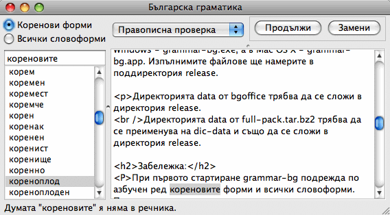
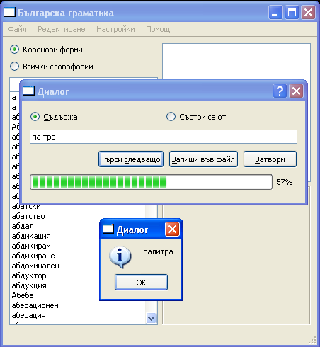
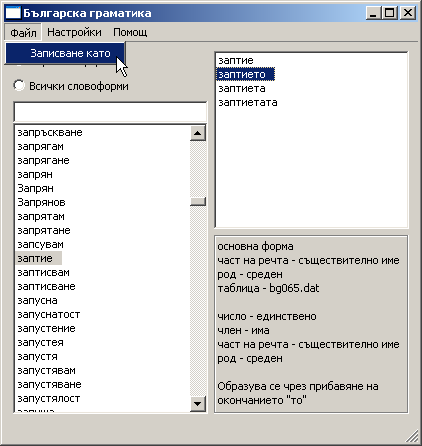

grammar-bg е нов опит за компютърно междуплатформено представяне на българския език. Надявам се grammar-bg да бъде полезен при: създаване на различни речници (правописни, синонимни, тълковни, двуезични) и програми за: проверка на правописа и граматиката, показване на справочна информация, автоматична обработка на български текстове, превод от български на друг език или обратно и т.н.
grammar-bg е проект с отворен код (GNU GPL 2) и представлява набор от C++ заглавни файлове и файлове с код, ползващи библиотеката Qt 4.x. В тези файлове се дефинират набор от класове, описващи речниковия състав (и евентуално) граматиката на българския език.
Намерението е grammar-bg да може да ползва информация от редица сходни проекти, като например bgoffice (http://bgoffice.sourceforge.net) и да обедини натрупаната в тези проекти информация за българския език.
Изходния код на grammar-bg, може да изтеглите от тук.
За работа на програмата са необходими още:
файловете от директорията data на bgoffice, които ще намерите на сайта sourceforge.net и
другите речници от същия проект, които се изтеглят пак от там.
За да може да компилирате grammar-bg, трябва преди това да сте изтеглили и инсталирали Qt. За информация на български как се прави това, вижте "Програмиране с Qt"
След като дезархивирате изтегления файл, влезте в директорията, в която сте дезархивирали и подайте последователно командите qmake и make. Първата създава необходимия MakeFile, а втората компилира програмата до изпълним файл: в Linux - grammar-bg, в Windows - grammar-bg.exe, а в Mac OS X - grammar-bg.app. Изпълнимите файлове ще намерите в поддиректория release.
Директорията data от bgoffice трябва да се сложи в директория release.
Директорията data от full-pack.tar.bz2 трябва да се преименува на dic-data и също да се сложи в директория release.
При първото стартиране grammar-bg подрежда по азбучен ред кореновите форми и всички словоформи. Подреждането може да продължи няколко минути, но след това реда на думите се записва в два файла - roots.dat и forms.dat и при следващи стартирания се чете от там, което става многократно по-бързо.
21 май 2008 г. - версия 1.0

26 февруари 2008 г. - версия 0.3
Вече са реализирани и опциите за търсене на думи, които се "състоят от" определени части, както и "запис във файл" на всички намерени думи. Направени са малки подобрения в интерфейса.
16 февруари 2008 г. - версия 0.2
В тази версия е добавена функция за търсене на думи. След избиране на "Редактиране" -> "Търсене" от главното меню, се показва диалог, в който можете да напишете отделни букви, срички или въобще части, които трябва да съдържа търсената дума. Последните трябва да са отделени с интервали. Търсенето се осъществява след щракването на бутона "Следващо търсене". Предстои да бъдат добавени още възможности за търсене.

25 ноември 2007 г.
Следваща версия, носеща вече номер 0.1, позволява запис на показвания списък от основни форми на думите или списък от всички словоформи от речниците на bgoffice в .txt файл.

14 март 2007 г.
Първа, публикувана версия на проекта представлява програма с графичен интерфейс, която: чете информацията от файловете на data директорията на bgoffice и показва списък на кореновите или производни форми на описаните в тези файлове думи. Показва също и съдържащата се в тези файлове граматическа информация за различните словоформи. Практическа полза от програмата в този вид може да има от това, че позволява лесно да се намират различни словоформи и да се провери коректността на информацията за тях.
Автор на проекта:
Ваньо Георгиев
vanyog.com